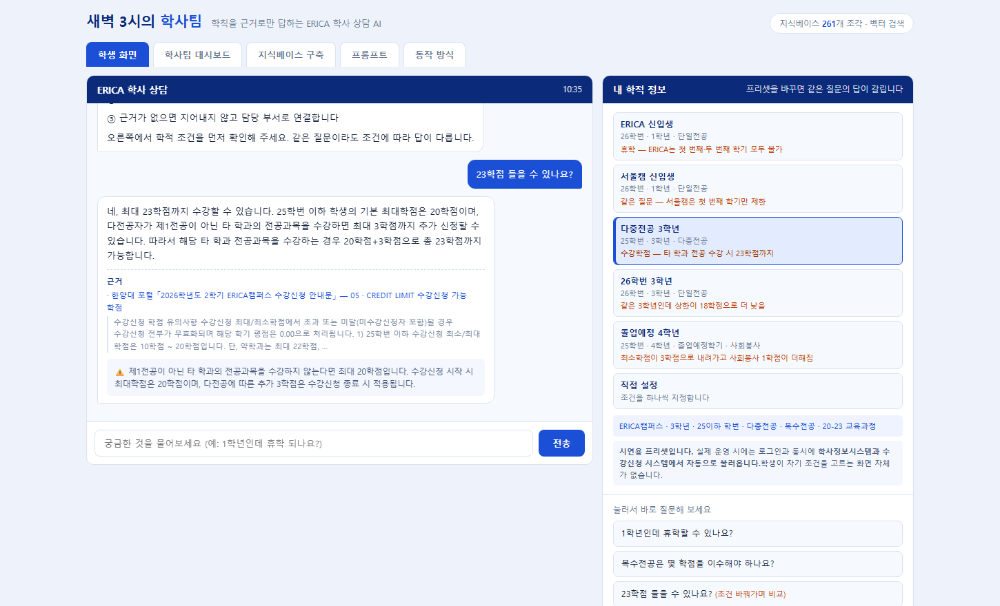

ERICA 학칙·학사운영규정·이수요건 원문만을 근거로 답하고, 모든 답변에 조항 출처를 붙이며, 근거가 없으면 답하지 않고 담당 부서로 넘기는 24시간 학사 상담 AI를 구축합니다. 나아가 이 시스템에 쌓이는 질문 로그를 학칙 자체를 고치는 근거 데이터로 환류시킵니다.
질문이 반복해서 몰리는 조항은 학생이 무지해서가 아니라 규정이 모호하기 때문입니다. 본 시스템은 그 지점을 자동으로 집계해 개정이 필요한 조항 목록을 학사팀에 제공합니다. 즉 상담 창구를 만드는 데서 끝나지 않고, 규정 문장 자체를 개선하는 순환 구조를 만듭니다. 이것이 "학생의 경험이 제도가 됩니다"라는 공모 취지에 대한 본 제안의 답입니다.
질문이 생기는 시각과 답할 수 있는 시각이 어긋나 있습니다.
학칙 원문에서만 답을 생성하고 조항을 함께 제시합니다.
질문이 몰린 조항을 모호 조항으로 지목해 개정을 제안합니다.
| 구분 | 변화 |
|---|---|
| 학생 | 새벽에도 근거 있는 답을 즉시 얻고, 잘못된 정보로 인한 학사상 불이익을 피합니다. |
| 학사팀 | 단순 반복 문의를 자동 처리해, 판단이 필요한 상담에 시간을 집중할 수 있습니다. |
| 대학 | 문의 데이터로 규정의 취약 지점을 상시 진단하는 근거 기반 학사행정을 확보합니다. |
학사 문의는 아무 때나 생기지 않습니다. 수강신청 직전, 정정 기간 마지막 날 밤, 휴학 여부를 고민하는 새벽, 졸업사정 결과를 확인한 직후에 집중됩니다. 그런데 이 시각은 모두 행정실 운영시간 밖입니다.
시간만 문제가 아닙니다. 한양대 포털 수강안내 게시판을 직접 확인한 결과, 안내문 25건이 캠퍼스·학부·대학원 구분 없이 한 목록에 나열되어 있었습니다. 서울캠퍼스 학부와 13개 대학원의 안내문이 섞여 있고, ERICA 학부생에게 해당하는 것은 25건 중 단 1건이었습니다.
| 수강안내 게시판 실태 | 확인 내용 (2026. 9. 21. 조회) |
|---|---|
| 전체 게시물 | 25건 — 서울·ERICA, 학부·대학원 혼재 |
| ERICA 학부 해당 | 1건 (전체의 4%) — 「2026학년도 2학기 ERICA캠퍼스 수강신청 안내문」 |
| 지난 학기·연도 안내문 | 「2020학년도 1학기」, 「2022-1」, 「2025-1학기」, 「2026-1학기」 등이 현재 목록에 그대로 게시 |
학사 결정에는 되돌릴 수 없는 기한이 붙어 있습니다. 수강신청 정정 기간, 다전공 신청 마감, 휴학·복학 신청 시한은 하루만 지나도 다음 학기로 밀립니다. 밤에 생긴 의문을 다음 날 낮까지 미룰 수 없는 경우가 많고, 그래서 학생은 기다리는 대신 다른 곳에 묻습니다.
학생들은 답을 못 얻는 게 아닙니다. 에브리타임 등 익명 커뮤니티에서 이미 답을 얻고 있습니다. 문제는 그 답의 성격입니다.
근거 없음책임 없음
· 답변자는 같은 학생이며 규정을 확인하지 않습니다
· 과거 학번 기준의 답이 현재 교육과정에 그대로 적용됩니다
· 틀려도 정정되지 않고 검색으로 계속 재유통됩니다
· 답변자는 아무 책임을 지지 않습니다
조항 인용출처 추적
· 학칙·학사운영규정 원문에서만 답을 생성합니다
· 답변마다 근거 조항과 문서명을 함께 표시합니다
· 학번·교육과정 연도를 반영해 적용 기준을 구분합니다
· 근거가 없으면 답하지 않고 담당 부서로 연결합니다
학생이 성실하게 학칙을 펴도 답을 찾지 못하는 경우가 많습니다. 한양대학교 학칙(2024.10.31. 개정) 원문을 직접 분석한 결과, 학생 관심이 가장 큰 조항일수록 실질 내용을 다른 규정으로 넘기고 있었습니다.
조항 전체가 위임으로만 이루어져 있습니다. 이수 학점도, 신청 자격도, 포기 절차도 학칙에는 없습니다. 학생은 "세칙"이 어느 문서인지부터 다시 찾아야 하고, 그 탐색에 실패하면 커뮤니티로 향합니다.
※ 이처럼 학사 규정의 오답은 단순한 불편이 아니라 학적상 불이익으로 직결됩니다. 본 제안이 "근거 없는 답을 하지 않는 것"을 제1원칙으로 삼는 이유입니다.
"규정이 모호하다"는 주장은 인상이 아니라 계측의 대상입니다. 본 제안은 한양대학교 학칙(2024.10.31. 개정) 전문 61쪽을 텍스트로 추출한 뒤, 조문 단위로 분해하여 모호성 지표를 실제로 측정했습니다.
위임·단서·"불구하고" 표현의 출현 빈도로 산출. 부칙·경과조치 조항은 제외하고 학생 직접 관련 조항만 표시.
| 조항 | 위임 | 단서 | 진단 — 학생에게 무엇이 문제인가 |
|---|---|---|---|
| 제31조(교육과정) | 9 | 0 | 인증과정·특화과정이 모두 별도 문서. 내 전공에 무엇이 적용되는지 학칙만으로 판단 불가 |
| 제24조(휴학) | 3 | 1 | 캠퍼스별로 요건이 다르고 학과별 예외까지 중첩. 오답 시 신청 반려 |
| 제20조(전과(부)) | 4 | 0 | 허용 범위 20% 원칙 외 세부 기준 전부 위임 |
| 제49조(복수전공·다중전공) | 3 | 0 | 조항 전체가 위임. 이수 요건이 학칙에 존재하지 않음 |
| 제28조(제적) | 3 | 0 | 학과별 추가 제적 사유가 별도 규정. 불이익이 가장 큰 조항 |
| 제33조(이수학점) | 1 | 1 | 학칙은 "20학점"이라 적었으나 실제 상한은 18·20·22·23학점으로 갈림(아래 참조) |
각 행은 구체적 개정 문안으로 이어집니다. 예를 들어 제49조에는 "세칙"의 명칭과 소재를 함께 적시하고, 제24조에는 캠퍼스별 요건 차이를 표로 병기하며, 제28조에는 학과별 추가 제적 사유의 존재를 본문에서 먼저 고지하는 방식입니다. 규정의 내용을 바꾸지 않고 찾아갈 수 있게 만드는 것만으로 상당수의 반복 질문이 사라집니다.
생성형 AI를 학사 상담에 그대로 쓰면 그럴듯하지만 틀린 답(환각)이 나옵니다. 학사 영역에서 틀린 답은 곧 학생의 불이익이므로, 본 시스템은 답변 생성 방식 자체를 제약합니다.
근거를 찾지 못하면 답을 지어내지 않고 학사운영팀 전화번호 안내와 1:1 문의 접수로 넘깁니다. 모른다고 말할 수 있어야 나머지 답변이 신뢰를 얻습니다.
모든 답변에 문서명·조항·게시일을 함께 표시합니다. 학생이 원문을 직접 확인할 수 있어야 하며, 이는 답변에 책임 소재를 부여합니다.
로그인과 동시에 학번·학년·전공 유형·추가 신청 사항을 학사정보시스템에서 불러와, 그 학생에게 적용되는 값만 계산해 답합니다. 학생이 조건을 되짚어 볼 필요가 없습니다.
학칙만으로 판단할 수 없는 질문은 반드시 생깁니다. 본 시스템은 이를 실패가 아니라 정상 동작으로 규정하고, 두 경로로 인계합니다.
담당 부서와 전화번호, 운영시간을 즉시 표시합니다. 어느 부서로 걸어야 하는지 몰라 헤매는 시간을 없앱니다. 운영시간이 지난 시각이면 다음 응대 가능 시각을 함께 안내합니다.
대화 내용과 학생의 조건(학번·교육과정·전공)이 자동으로 정리되어 문의 양식에 담깁니다. 학생은 상황을 다시 설명할 필요가 없고, 담당자는 맥락이 정리된 문의를 받아 응답 시간이 줄어듭니다.
※ 지금은 닫힌 시간의 질문이 커뮤니티로 흘러가 기록되지 않지만, 이 경로를 만들면 모든 질문이 학교의 데이터로 남아 규정 개선에 쓰입니다.
규정 원문을 검색해 근거로 삼는 검색증강생성(RAG) 방식을 적용한 선행 연구에서, 환각 발생률이 31.7%에서 6.6%로 감소한 것으로 보고되었습니다. 또한 학생의 프로필을 반영한 대학 학사 상담 챗봇 연구(proFILL)는 프로필을 고려한 응답이 일반 RAG보다 선호되며, 오픈 웨이트 모델을 이용한 교내 자체 구축도 비용 효율적으로 가능함을 보였습니다.

실제 실행 화면. 25학번 3학년 다중전공 조건에서 "23학점 들을 수 있나요?"를 물었을 때, 지식베이스 261개 조각에서 학칙 제33조(이수학점)와 안내문 05 CREDIT LIMIT을 함께 찾아 답한 결과입니다. 오른쪽 학적 프리셋을 바꾸면 같은 질문의 답이 갈립니다 — 캠퍼스·입학 학번·전공 유형·추가 신청이 각각 하나씩 걸리도록 구성했습니다.
"23학점 들을 수 있나요?" 학칙 제33조는 "20학점을 초과하지 못한다"고만 적혀 있지만, 실제 적용은 학적에 따라 이렇게 갈립니다.
| 학적 조건 | 수강 가능 최대 학점 |
|---|---|
| 25학번 이하 · 단일전공 | 20학점 — "안 됩니다" |
| 25학번 이하 · 다전공자가 타 학과 전공 수강 | +3 → 23학점 — "됩니다" |
| + 사회봉사 신청 / + ROTC 필수 교과목 | 각각 +1 / +2 추가 |
| 26학번 이후 · 1·2학년 / 3학년 이상 | 20학점 / 18학점 |
| 약학과 / 스마트융합공학부 | 22학점 / 23학점 |
※ 근거를 찾지 못하거나 개별 학적 확인이 필요하면 답변을 생성하지 않고 학사운영팀 031-400-4231 · 평일 09–18시 안내와 1:1 문의 접수로 인계합니다(6쪽 참조).
윗줄(파란 흐름)만 있으면 단순한 FAQ 챗봇입니다. 본 제안이 제도 개선안인 이유는 아랫줄 때문입니다. 답변하지 못한 질문, 반복해서 되묻는 질문, 조건을 오해한 질문이 모두 기록되어 규정의 어느 문장이 문제인지를 가리킵니다. 학사팀은 그 신호를 받아 조항을 고치고, 조항이 고쳐지면 그 질문 자체가 사라집니다.
챗봇은 질문에 대응하지만, 규정 개정은 질문을 소멸시킵니다. 전자는 운영이고 후자가 제도 개선입니다. 두 가지를 한 시스템에 묶는 것이 본 제안입니다.
전면 도입은 위험합니다. 오답의 책임 범위가 정해지지 않은 상태에서 전 학사 영역을 열면, 시스템 자체가 새로운 분쟁의 원인이 됩니다. 범위를 좁혀 시작하고, 정확도가 확인된 영역부터 넓히는 방식을 제안합니다.
| 단계 | 범위 | 검증 항목 |
|---|---|---|
| 1단계 시범 |
수강신청·다전공 2개 영역 규정이 문서로 확정되어 있어 근거 검증이 쉬운 영역 |
답변 정확도, 근거 조항 적합성, 답변 불가 비율 학사팀이 표본을 직접 검수해 오답을 계측 |
| 2단계 확대 |
성적·학사안내 추가 수강신청 기간에 맞춰 부하 검증 |
피크 시간대 응답성, 재질문률 감소 여부 |
| 3단계 연동·환류 |
학사정보시스템 + 수강신청 시스템 연동 학번·전공 유형·추가 신청 사항에 더해 현재 신청 학점, 강좌별 이수제한, 여석까지 조회해야 "이 수업을 지금 신청할 수 있는가"에 답할 수 있습니다. + 모호 조항 진단표 정기 보고 |
개정 전후 동일 질문 발생량 변화 제도 개선 효과의 직접 지표 |
마지막 두 지표가 본 제안의 고유 지표입니다. 일반적인 챗봇은 응답 건수로 성과를 주장하지만, 본 시스템은 질문이 줄어드는 것을 성과로 삼습니다.
| 도구 | 활용 목적 | 구체적 사용 내역 |
|---|---|---|
| 대화형 LLM (Claude) | 문제 정의 구조화 및 제안서 작성 | 문제 논리 구성, 반론 점검, 본 제안서 초안 작성 및 편집 |
| 웹 검색 · 브라우저 자동화 | 근거 자료 수집 | 포털 수강신청 안내문 전문 수집(접힌 항목 95개 자동 전개 후 추출), 게시판 실태 조사, 선행 연구 확인 |
| 문서 분석 스크립트 (Python) | 학칙 원문 계량 분석 | 학칙 PDF 61쪽 텍스트 추출 → 조문 단위 분해 → 위임·단서·재량 표현 빈도 측정 및 조항별 순위 산출 |
| 문서 자동 생성 | 결과물 제작 | HTML 기반 지면 구성 후 PDF 자동 렌더링(도식·화면 설계 포함) |
· ERICA 학사안내 — 「다중전공」, 「전공학점 인정받는 다전공 학과의 전공기초」, 「수강신청유의사항」 (ehaksa.hanyang.ac.kr)
· 한국지능정보사회진흥원(NIA), 「검색증강생성(RAG) 기술의 등장과 발전 동향」
· proFILL: 프로필 인지형 검색 증강 대학 학사 상담 챗봇(hoBIT) 연구
· 대학 이해관계자를 위한 다중 모드 챗 어시스턴트 개발 방안: RAG 기반 접근법